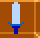
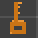
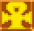
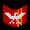
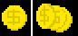
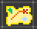

![[Troll Bridge]](title.png)
As your troll adventures throughout the world, he will find many items that can aid him in survival.
Primary Items
| The Sword is the initial weapon in Troll Bridge. Although not very strong and of limited range it is worthwhile becoming familiar with it. |
|  The Enchanted Sword is no more powerful than the starting sword but when the weilder is at full strength a blast of energy is emitted from the blade. |
Secondary Items
|  Keys can be used to open locked doors. Keys are fairly common and can be purchased in many shops. Monsters also occassionaly carry these. |
|  The Ankh causes fear in the undead. Darkness can also be repelled by its power. |
|  The Shield protects against most ranged attacks. The shield remains active as long as the character doesn't move. It is further limited by protecting only the direction the character is facing. |
Miscellaneous Items
|  Gold coins are used as currency throughout the world. Although you're far from civilization, there are some merchants in the area who sell supplies to hunters and adventurers. |
| Hit Points represent the character's health. If they drop to zero the character dies. Collecting hit points will replenish your character's health. |
|  Maps fill in all the unknown areas for the current level. |